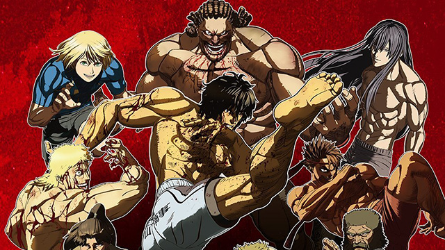
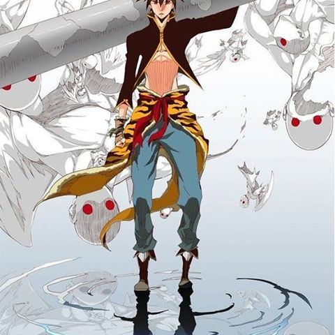
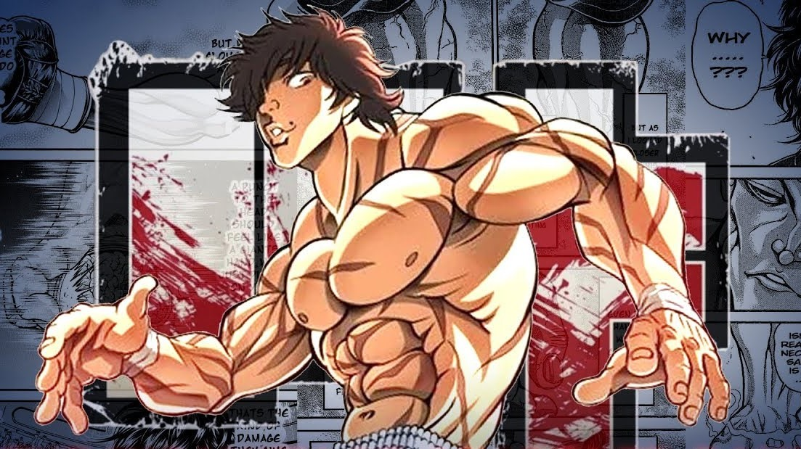
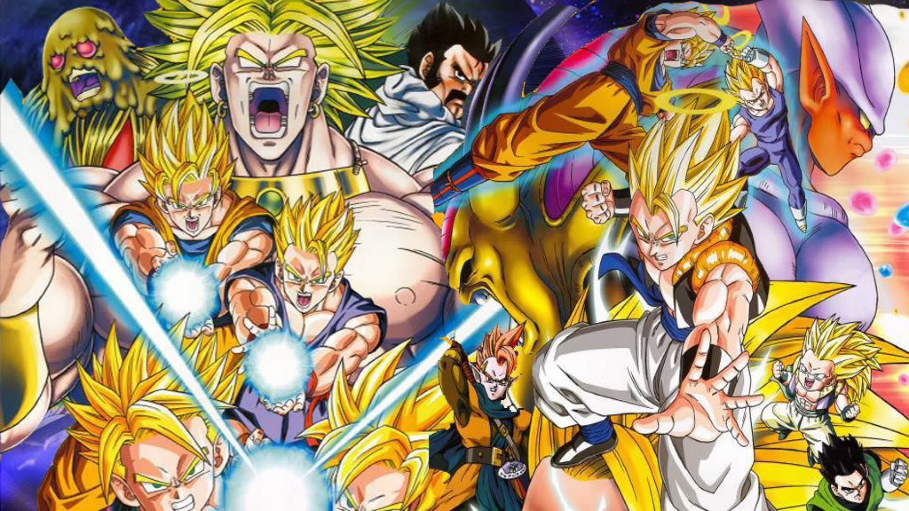

5: Kengan Ashura
Ratings : 🌟 7.5
English Name : Kengan Ashura
Genre :ActionMartial Arts
Seasons : 2
Episodes : 12(Per Season)
Air-Date : 31-July-2019
Watch-Time : 24 min.(Per Ep.)
Synopsis:
Business deals are usually made through meetings and contracts; but in the world of Kengan Ashura, businesses resort to other means to make their decisions: by hiring gladiators. Yabako Sandrovich's Kengan Ashura depicts a world brimming with action, violence, and martial arts—one where powerful gladiators have fought in grand arenas since the Edo Period to settle the disputes of wealthy businesses and merchants.
Ouma Tokita, who is nicknamed "The Ashura," is a fighter trying to prove himself as the strongest. Hideki Nogi, a member of the Nogi Group, hires Ouma to fight for him and makes Kazuo Yamashita, an average middle-aged man, his manager. The duo is thrown into fights facilitated by the Kengan Association. Their journey will be full of ruthless battles with other fighters aiming for the same goal. Do they have what it takes to be the best?
4: The God of High School
Ratings : 🌟 7.1
English Name : The God of High School
Genre : ActionAdventureComedyMartial ArtsSci-FiSupernatural
Seasons : 1
Episodes : 13
Air-Date : 6-July-2020
Watch-Time : 24 min.(Per Ep.)
Synopsis:
The "God of High School" tournament has begun, seeking out the greatest fighter among Korean high school students! All martial arts styles, weapons, means, and methods of attaining victory are permitted. The prize? One wish for anything desired by the winner.
Taekwondo expert Jin Mo-Ri is invited to participate in the competition. There he befriends karate specialist Han Dae-Wi and swordswoman Yu Mi-Ra, who both have entered for their own personal reasons. Mo-Ri knows that no opponent will be the same and that the matches will be the most ruthless he has ever fought in his life. But instead of being worried, this prospect excites him beyond belief.
A secret lies beneath the facade of a transparent test of combat prowess the tournament claims to be—one that has Korean political candidate Park Mu-Jin watching every fight with expectant, hungry eyes. Mo-Ri, Dae-Wi, and Mi-Ra are about to discover what it really means to become the God of High School.
3: Grappler Baki
Ratings : 🌟 7.5
English Name : Grappler Baki
Genre : ActionSportsMartial ArtsShounen
Seasons : 2
Episodes : 24(Per Season)
Air-Date : 9-January-2001
Watch-Time : 24 min.(Per Ep.)
Ever since he was born, Baki Hanma has always known nothing but fighting—strengthening every single muscle and learning different techniques from various martial arts under the supervision of his mother, Emi Akezawa. He trains in order to prepare himself to face and eventually surpass his own father, Yuujirou Hanma, a man feared by the masses as the "Ogre" and deemed the strongest being in the world.
However, when Baki realizes his mother's techniques are no longer enough, he sets out to become stronger in his own way. Seeking out powerful opponents and forming unbreakable bonds with them, he continues to grow both body and his soul, as the clock continues to tick closer toward the inevitable showdown against his father...
2: Hajime no Ippo

Ratings : 🌟 8.7
English Name : Fighting Spirit
Genre : ComedySportsDramaMartial ArtsShounen
Seasons : 1
Episodes : 75
Air-Date : 4-October-2000
Watch-Time : 24 min.(Per Ep.)
Synopsis:
Makunouchi Ippo has been bullied his entire life. Constantly running errands and being beaten up by his classmates, Ippo has always dreamed of changing himself, but never has the passion to act upon it. One day, in the midst of yet another bullying, Ippo is saved by Takamura Mamoru, who happens to be a boxer. Ippo faints from his injuries and is brought to the Kamogawa boxing gym to recover. As he regains consciousness, he is awed and amazed at his new surroundings in the gym, though lacks confidence to attempt anything. Takamura places a photo of Ippo's classmate on a punching bag and forces him to punch it. It is only then that Ippo feels something stir inside him and eventually asks Takamura to train him in boxing. Thinking that Ippo does not have what it takes, Takamura gives him a task deemed impossible and gives him a one week time limit. With a sudden desire to get stronger, for himself and his hard working mother, Ippo trains relentlessly to accomplish the task within the time limit. Thus Ippo's journey to the top of the boxing world begins.
1: Dragon Ball: Doragon boru
Ratings : 🌟 8.1
English Name : Dragon Ball
Genre : ActionAdventureComedyMartial ArtsShounen
Seasons : 1
Episodes : 153
Air-Date : 26-February-1986
Watch-Time : 24 min.(Per Ep.)
Synopsis:
Gokuu Son is a young boy who lives in the woods all alone—that is, until a girl named Bulma runs into him in her search for a set of magical objects called the "Dragon Balls." Since the artifacts are said to grant one wish to whoever collects all seven, Bulma hopes to gather them and wish for a perfect boyfriend. Gokuu happens to be in possession of a dragon ball, but unfortunately for Bulma, he refuses to part ways with it, so she makes him a deal: he can tag along on her journey if he lets her borrow the dragon ball's power. With that, the two set off on the journey of a lifetime.
They don't go on the journey alone. On the way, they meet the old Muten-Roshi and wannabe disciple Kuririn, with whom Gokuu trains to become a stronger martial artist for the upcoming World Martial Arts Tournament. However, it's not all fun and games; the ability to make any wish come true is a powerful one, and there are others who would do much worse than just wishing for a boyfriend. To stop those who would try to abuse the legendary power, they train to become stronger fighters, using their newfound strength to help the people around them along the way.